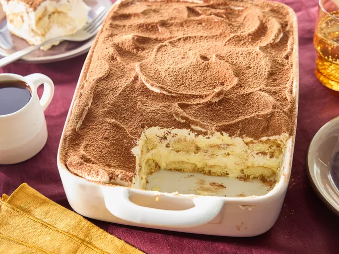

Tiramisu

Description
What is Tiramisu?
Tiramisu is a coffee-flavored dessert that features layers of homemade whipped cream, an egg yolk-enriched mascarpone filling, and coffee-soaked ladyfingers.
Triamisu Origin
Tiramisu has Italian origins. The famous Italian restaurateur Ado Campeol is credited with its invention in the 1970s. In fact, he was widely known as "the father of tiramisu." The word "tiramisu" translates to "pick-me-up."
Ingredients:
- 6 Egg Yolks: Egg yolks are essential for a thick, rich, velvety smooth filling. Though some traditional recipes use raw eggs, this one doesn't — raw eggs carry the risk of food-borne illness.
- ¾ cup Sugar: White sugar is cooked with egg yolks and combined with mascarpone to create a sweet, creamy filling.
- ⅔ cup Milk: Whole milk slightly thins the thick filling, resulting in a spreadable texture.
- 1 ¼ cups Cream: Beat heavy cream until stiff peaks form to create an irresistible whipped cream.
- ½ teaspoon Vanilla: Vanilla extract adds subtle flavor to the homemade whipped cream.
- 1 pound Mascarpone: Mascarpone, a creamy Italian cheese with a smooth texture and fresh taste, is a key ingredient in classic tiramisu.
- ¼ cup Coffee: Ladyfingers are soaked in strong, spiked coffee — this is what gives tiramisu its signature flavor.
- 2 tablespoons Rum: Rum is used to spike the coffee that will be drizzled over the ladyfingers. Some Allrecipes community members say they prefer Kahlua.
- 2 (3 ounce) packages Ladyfingers Cookies: Ladyfingers are small sponge cakes that are shaped like thick fingers. If you can't find ladyfingers at your grocery store, you can use pound cake cut into strips.
- 1 tablespoon Cocoa Powder: Finish off this decadent dessert with a generous dusting of cocoa powder.
Instructions:
- Gather the ingredients.
- Whisk egg yolks and sugar together in a medium saucepan until well blended.
- Whisk in milk and cook over medium heat, stirring constantly, until mixture comes to a boil.
- Boil gently for 1 minute, then remove from the heat and allow to cool slightly.
- Cover tightly and chill in the refrigerator for 1 hour.
- Beat cream and vanilla in a medium bowl with an electric mixer until stiff peaks form
- Remove egg yolk mixture from the refrigerator; add mascarpone cheese and whisk until smooth.
- Combine coffee and rum in a small bowl. Split ladyfingers in half lengthwise and drizzle with the coffee mixture. Arrange 1/2 of the soaked ladyfingers in the bottom of a 7x11-inch dish.
- Spread 1/2 of the mascarpone mixture over the ladyfingers, then spread 1/2 of the whipped cream over top. Repeat layers once more.
- Sprinkle cocoa powder over top.
- Cover and refrigerate until set, 4 to 6 hours.
- Enjoy your Tiramisu!
Homepage